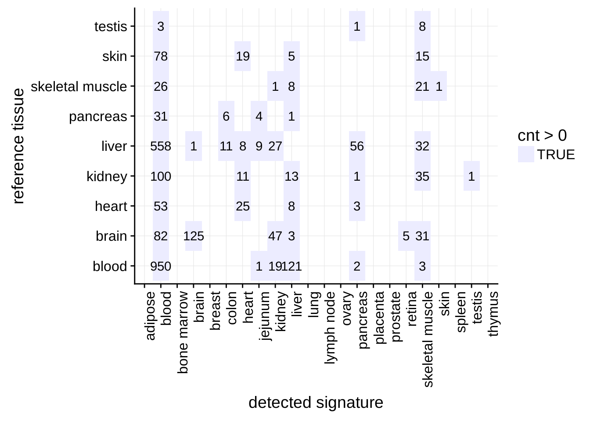

9 Figures for publication
9.1 Contamination heatmaps
load('../results/data_processed.RData')
load('../results/models.RData')
contam_count_array = data_corr %>%
filter(pcorr_adj < P_THRES) %>%
group_by(TGROUP, SIGNATURE) %>%
summarise(cnt = n_distinct(GSM))
data_corr_array = data_corr
load('../results/archs4/archs4_data_processed.RData')
load('../results/archs4/archs4_models.RData')
contam_count_ngs = data_corr %>%
filter(pcorr_adj < P_THRES) %>%
group_by(TGROUP, SIGNATURE) %>%
summarise(cnt = n_distinct(GSM))
data_corr_ngs = data_corrsame as in the section before, but all bioqc signatures aggregated by tissue groups.
bioqc_tissue_set = read_csv("../data/bioqc_geo_oracle_dump/BIOQC_TISSUE_SET_DATA_TABLE.csv") %>%
filter(TISSUE_SET == 'bioqc_all') %>%
select(SIG_ID=SIGNATURE, DETECTED_TGROUP=TGROUP)## Parsed with column specification:
## cols(
## SIGNATURE = col_integer(),
## TISSUE = col_character(),
## TGROUP = col_character(),
## TISSUE_SET = col_character()
## )bioqc_all = selected_signatures %>%
filter(str_detect(SIGNATURE, 'BIOQC')) %>%
pull("SIGNATURE")
contam_count_ngs_tgroup = data_corr_ngs %>%
inner_join(bioqc_signatures, by=c("SIGNATURE"="SIG_NAME")) %>%
rename(SIG_ID=ID) %>%
inner_join(bioqc_tissue_set) %>%
filter(pcorr_adj < P_THRES) %>%
group_by(TGROUP, DETECTED_TGROUP) %>%
summarise(cnt = n_distinct(GSM))## Joining, by = "SIG_ID"contam_count_array_tgroup = data_corr_array %>%
inner_join(bioqc_signatures, by=c("SIGNATURE"="SIG_NAME")) %>%
rename(SIG_ID=ID) %>%
inner_join(bioqc_tissue_set) %>%
filter(pcorr_adj < P_THRES) %>%
group_by(TGROUP, DETECTED_TGROUP) %>%
summarise(cnt = n_distinct(GSM))## Joining, by = "SIG_ID"tgroups = bioqc_tissue_set$DETECTED_TGROUP %>% unique()
contam_count_ngs_tgroup %>%
ggplot(aes(x=factor(DETECTED_TGROUP, levels=tgroups), y=TGROUP)) +
geom_tile(aes(fill = cnt > 0)) +
geom_text(aes(label=cnt)) +
theme(axis.text.x = element_text(angle = 90, hjust = 1)) +
scale_x_discrete(drop=FALSE) +
ylab("reference tissue") +
xlab("detected signature") +
background_grid() +
scale_fill_manual(values=c("#ececff"))
tgroups = bioqc_tissue_set$DETECTED_TGROUP %>% unique()
contam_count_array_tgroup %>%
ggplot(aes(x=factor(DETECTED_TGROUP, levels=tgroups), y=TGROUP)) +
geom_tile(aes(fill = cnt > 0)) +
geom_text(aes(label=cnt)) +
theme(axis.text.x = element_text(angle = 90, hjust = 1)) +
scale_x_discrete(drop=FALSE) +
ylab("reference tissue") +
xlab("detected signature") +
background_grid() +
scale_fill_manual(values=c("#ececff"))
Gönen, Mithat. 2009. “Statistical aspects of gene signatures and molecular targets.” Gastrointest Cancer Res 3 (2 Suppl): 19–21. http://www.pubmedcentral.nih.gov/articlerender.fcgi?artid=2684735{\&}tool=pmcentrez{\&}rendertype=abstract.